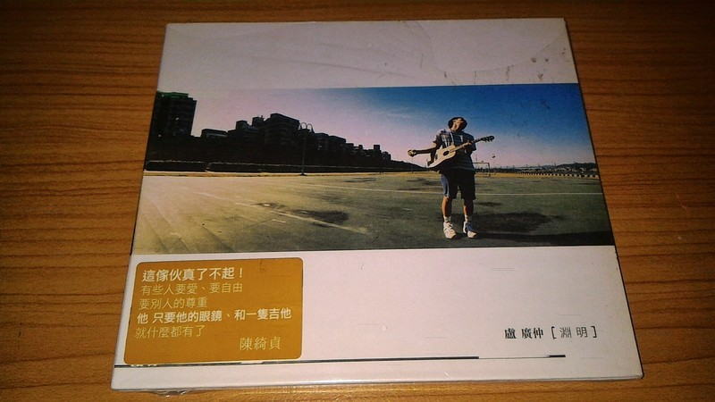

簡介
他是男孩，也是一位歌手，來自台南，畢業於淡江大學西班牙文系，電機工程學系一年級時因車禍住院而開始接觸吉他，並在隔年獲得淡江大學「金韶獎」創作歌謠比賽創作及獨唱冠軍；接著，他又獲得國立政治大學「金旋獎」創作組冠軍及最佳人氣獎，並在第20屆金曲獎中獲得最佳新人獎以及最佳作曲人獎。然而他的歌手之路並不是一路順遂的，也曾不被看好.在去年的時候，他發行了一張名為《What a Folk!!!!!》的專輯，為了籌備這張專輯，他低潮了三年.不過，當這張專輯一發行，就獲得了廣大的迴響.此外，他最近也在戲劇圈裡因扮演鄭花甲一角色，演技大爆發，將阿甲演得活裡活現，尤其在與資深演員蔡振南一鏡到底的街角對罵戲中表現相當亮眼台語相當純熟，短片流出後不到幾小時即得到上萬人關注。總的來說，他是一位多才多藝的藝人，他持續地在挑戰自己，並且證明自己的實力.
而他也是一位創作型歌手，出道作品為《淵明》，這首歌詞的有相當明確適切的情緒表達，也相當符合這樣年紀身分的感情.在於渴望被了解的同時又有一種不屑被了解的青澀味，這樣矛盾模糊的拉扯中總能讓聽者各取其意然後得到一份屬於自己的感動，表達與領受的不同步使得歌詞富生命力所以漂亮.而從他的音樂中能夠感受到他對於音樂的熱忱，雖然他的歌詞很淺顯易懂，卻能夠明白他歌詞裡的意境而有所感動.

代表作品《100種生活》
《早安，晨之美！》
《我愛你》
《慢靈魂》
《OH YEAH!!!》
《魚仔》
《明仔載》
在他眾多的音樂作品中，我最喜歡《大人中》這首歌.不論在甚麼時候聽著這流瀉的樂音，都會感到壓力被釋放了.當在夜深人靜的時候，聽著這歌詞的意涵，想著自己也是如歌詞中所說的--"長大後誰不是離家出走 茫茫人海裡游 抬起頭才發現 流眼淚的星星正在放棄我 請擁抱我 萬一我不小心墜落. 這簡單的幾個字，卻觸動人心.由這幾句歌詞中，簡明扼要的傳達出--對於長大這件事，我們所要面臨的事物比以往來的多，卻也十分沉重.我們都只是在茫茫人海中的中一個點，在這廣大的天地中，我們自身甚至渺小的就如同的沙粒一般，不知道該何去何從，可是又感到無助.因此，廣仲才會說"流眼淚的星星正在放棄我 請擁抱我 萬一我不小心墜落. 不論你我，身為人，總有感到迷惘，抑或是迷失自我的時候.而在這樣的情況下我們就極可能需要他人適時的拉我們一把，讓我們穩住，才不會因此墜落，而喪失了自我的本質.
個人特質
有一位男孩，他有著一種鄰家男孩的特質，總是頂著一頭不變的髮型，戴著一副黑框的大眼鏡，手上永遠拿著一把木吉他，身穿短褲，配高襪，再加上一雙帆布鞋，配上一個靦腆的微笑，他是盧廣仲.不論遇到甚麼事，他都以微笑面對一切，而他總是掛著燦爛的微笑，有著滿滿的正能量.他的樂觀的態度是他鮮明的特色.而正是因為他這種特質吸引了我，讓我喜歡上這位歌手，以及他的音樂.相較其他歌手，他並沒有太浮誇的故事，過度雕琢的文字，有的只是細膩的筆觸和誠懇的態度.他對於音樂和生活的熱愛正是我所欣賞的，這也就是為甚麼我會喜歡他.